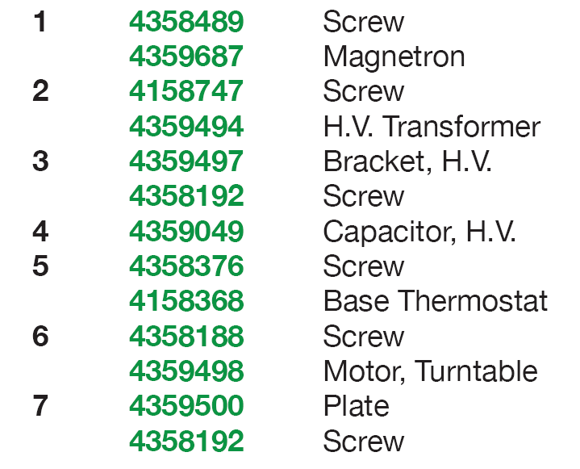
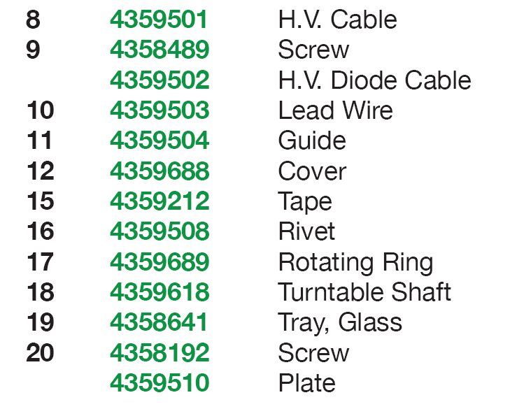


<h3>Typical Over The Range Microwave Breakdown:</h3>
<h4>magnetron and air flow</h4>


            <p style="text-align: center;">
                
            
            </p>
    <p style="text-align: center;">
                
            
            </p>


  